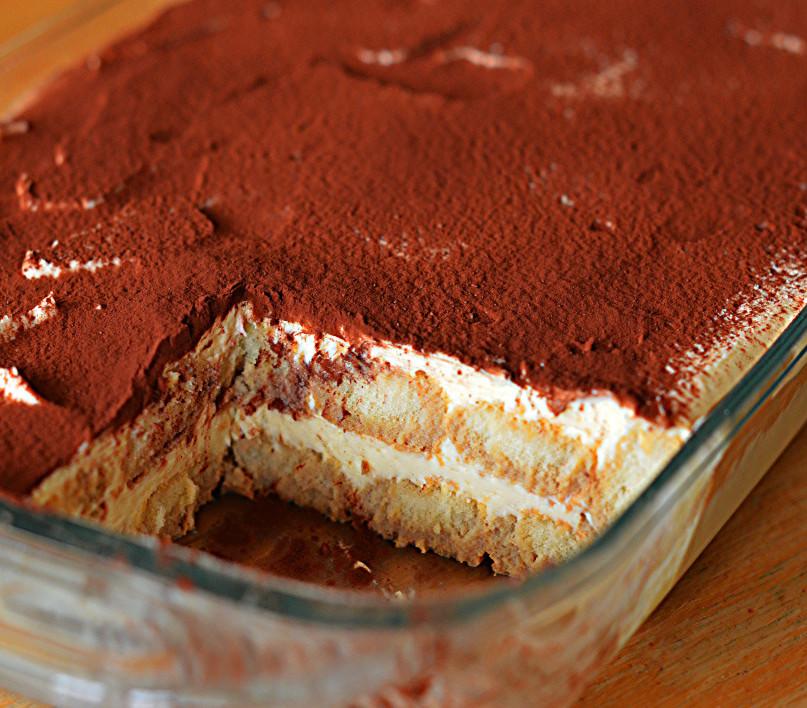
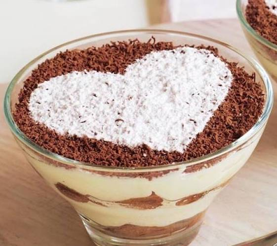
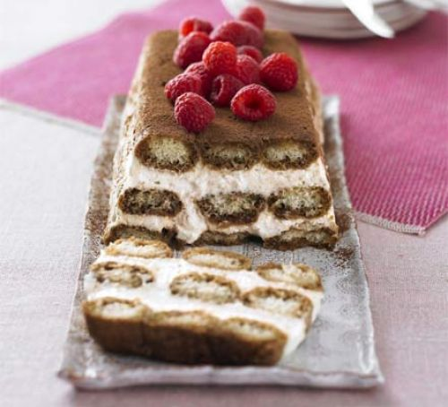
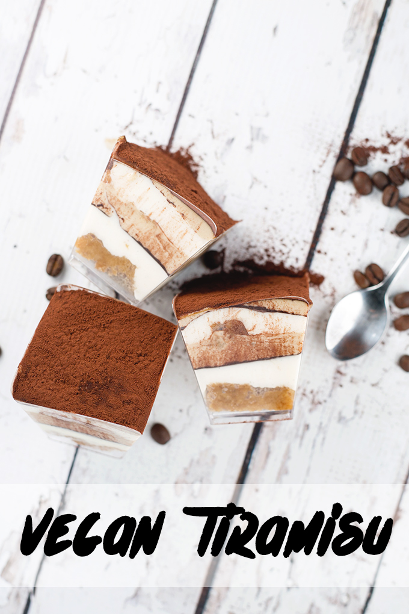
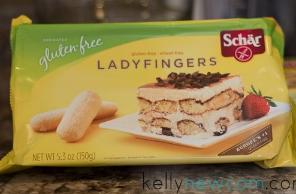

Difficult Diners Dessert
This Month is Italian Month, and we have chosen the ever popular and fabulous tiramisu as our dessert. The perfect show stopper and end to a dinner party to wow your guests. Tiramisu is vegetarian, we have also a vegan - dairy free opotion, gluten free and refined sugar free options for you to try.
Tiramisu
There are many different stories about the origin of Tiramisu'. It is a layered cake, so some people place its origin in Tuscany, where another famous layered Italian dessert is very popular. It is called “Zuppa Inglese” (English Soup).It can come in many forms from glass, to slice to whole tray bake! These recipes are easily adaptable to whichever style you prefer.



Tiramisu (V)
Ingredients:
- 568ml pot double cream
- 250g tub mascarpone
- 75ml marsala
- 5 tbsp golden caster sugar
- 300ml strong coffee, made with 2 tbsp coffee granules and 300ml boiling water
- 175g pack sponge fingers
- 25g chunked dark chocolate
- 2 tsp cocoa powder
Recipe:
- Put the cream, mascarpone, Marsala and sugar in a large bowl. Whisk until the cream and mascarpone have completely combined and have the consistency of thickly whipped cream.
- Get your serving dish ready. Put the coffee into a shallow dish and dip in a few sponge fingers at a time, turning for a few secs until they are nicely soaked, but not soggy. Layer these into your dish until you have used half the biscuits, then spread over half of the creamy mixture. Using the coarse side of the grater, grate over most of the chocolate. Then repeat the layers (you should use up all the coffee), finishing with the creamy layer.
- Cover and chill for a few hrs or overnight. This can now be kept in the fridge for up to 2 days. To serve, dust with cocoa powder and grate over the remainder of the chocolate.
.jpg) An example of the standard Tiramisu recipe, you can make this in any container or glass you'd like!
An example of the standard Tiramisu recipe, you can make this in any container or glass you'd like!
Tiramisu (Dairy Free)(Vegan)
Ingredients:
Vanilla Sheet Cake:
- 1/2 cup Soy Milk
- 1 teaspoon Apple Cider Vinegar
- 4 tablespoons Vegan Butter
- 1/8 teaspoon Salt
- 6 tablespoons Sugar
- 1 teaspoon Vanilla Extract
- 1/2 cup + 2 Tablespoons Pastry Flour
- 1/2 teaspoon Baking Powder
- 1/4 teaspoon Baking Soda
Soaking Syrup:
- 3/4 cup Freshly Brewed Coffee, cooled
- 3 tablespoons Sugar
- 3 tablespoons Kahlua
Vegan Mascarpone Filling:
- 1 3/4 cup Raw Cashews (no need to soak)
- 1/3 cup Agave Nectar
- 1/3 cup Melted Coconut Oil
- 1/4 teaspoon Salt
- Seeds of 1 Vanilla Bean Pod
- 3/4 cup Soy Milk
For Vanilla Cream:
- 1/4 cup Soy Milk
- 1 tablespoon Melted Coconut Oil
For Coffee Cream:
- 1 tablespoon Kahlua
- 1/3 cup freshly brewed Espresso, cooled
Extras:
- Cocoa Powder, for dusting
Recipe:
- Sheet Cake:
- Preheat oven to 175 degrees celsius. Grease and line a 8x6 inch cookie sheet with baking paper. Set aside.
- Whisk Soy Milk and Apple Cider Vinegar in a bowl set aside for 5 minutes to curdle.
- Sieve the Pastry Flour, Baking Powder and Baking Soda into a bowl. Set aside.
- In another bowl, whisk Vegan Butter, Sugar and Salt till light and fluffy, about a minute. Whisk in the Vanilla Extract.
- Alternate whisking in the Soy Milk mixture and dry ingredients, starting with 1/3 of the dry and ending with the last third of the dry mixture.
- Spread mixture out onto prepared cookie sheet and bake for 20 minutes, or until cooked through. It's okay if you over bake it slightly, it doesn't make a difference.
- Soaking Syrup:
- Mix Coffee, Kahlua and Sugar together till the sugar has dissolved. Set aside.
- Vegan Mascarpone Filling:
- In a high speed blender, combine Cashews, Agave, Coconut Oil, Salt, Vanilla and Soy Milk. Blend thoroughly until smooth and silky.
- Divide mixture into half. For Vanilla, use first half of mixture and thoroughly whisk in extra 1/4 cup Soy Milk and 1 tablespoon Coconut Oil. Set aside.
- For Coffee Cream, blend second half of Mascarpone mixture with Kahlua and Espresso.
- Assembly:
- To assemble, have ready a tiramisu dish or individual ramekins/glasses. Cut a piece of sheet cake to fit the bottom of your ramekin or glass. Dip in Soaking Syrup for just a second or two and place into the bottom of your vessel.
- Top with a layer of Vanilla Cream and dust with Cocoa Powder. At this point, freeze for 10 minutes.
- Once out of the freezer, top with a layer of Coffee Cream. Freeze for 10 minutes.
- Repeat process once more - soaked cake, vanilla cream and coffee cream - freezing cream layers for 10 minutes before continuing.
- Once complete, dust the tops of you Tiramisu with cocoa powder and leave in the fridge for at least 4-6 hours to firm up before eating.
 An example of the vegan Tiramisu recipe, you can make this in any container or glass you'd like!
Tiramisu (Gluten Free)
Gluten Free Swap:
Simply swap out gluten free lady fingers or sponge fingers for the regular ones used in the vegetarian recipe above! Follow those steps and you'll have a gluten free and delicous dessert.
